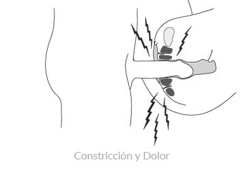
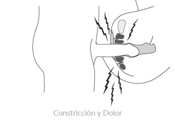

¿Qué es el Vaginismo?
El vaginismo es una constricción vaginal que causa incomodidad, ardor, dolor, problemas de penetración o completa inhabilidad para tener coito. El vaginismo también se conoce como trastorno del dolor genito-pélvico/penetración (DSM-V, por sus siglas en inglés).
Vaginismo [vaj‐uh‐niz‐moh s]1
El vaginismo es un padecimiento en el que existe una constricción involuntaria de la vagina al intentar el coito. De hecho, la constricción es causada por contracciones involuntarias de los músculos del piso pélvico que rodean la vagina. La mujer no controla directamente ni hace que la constricción ocurra; es una respuesta pélvica involuntaria. Es posible que ella ni siquiera esté consciente que la respuesta muscular esté causando la constricción o problema de penetración.
En algunos casos, la constricción del vaginismo puede empezar a causar ardor, dolor o punzadas durante el coito. En otros casos, puede que la penetración sea difícil o completamente imposible. El vaginismo es la principal causa de relaciones no consumadas. La constricción puede ser tan limitante que la abertura de la vagina se “cierra” completamente y el hombre no puede insertar su pene. El dolor del vaginismo termina cuando cesa el intento de actividad sexual, y usualmente el coito debe ser interrumpido a causa del dolor o la molestia.

Constricción Involuntaria del Vaginismo
En el diagrama de la izquierda, los efectos del vaginismo son ilustrados con la contracción de los músculos del piso pélvico y la resultante constricción de la vagina. En la derecha, el piso pélvico está relajado y el coito es posible sin dolor.
Tipos de Vaginismo
Vaginismo primario – Cuando una mujer, en ningún momento de su vida, ha podido tener actividad sexual sin dolor debido las contracciones involuntarias de los músculos del piso pélvico, su padecimiento se conoce como vaginismo primario. Algunas mujeres con vaginismo primario no son capaces de usar tampones y/o completar exámenes pélvicos. Muchas parejas no pueden consumar su relación debido al vaginismo primario. (vea Síntomas)
Vaginismo secundario – El vaginismo también puede ocurrir más tarde en la vida, incluso después de muchos años de coito placentero. Este tipo de condición, conocido como vaginismo secundario, normalmente es provocado por un padecimiento médico, evento traumático, parto, cirugía o cambio de vida (menopausia). (vea Causas)
¿Sabías Usted?
El vaginismo es una causa común de continuo dolor sexual y también es la causa principal femenina de matrimonios no consumados (sin sexo) El dolor sexual puede afectar a mujeres en todas las etapas de la vida; incluso a mujeres que han tenido sexo confortablemente por años. Aunque experimentar una molestia temporal durante la relación sexual no es inusual, problemas que son continuos deben ser diagnosticados y tratados.
 

Ejemplos de Vaginismo
En el padecimiento del vaginismo, Cuando un hombre aborda una mujer, su grupo muscular PC (sombreado oscuro) entra en espasmo y cierra apretadamente la entrada a la vagina, hacienda el coito imposiblemente doloroso o puede que la penetración tenga éxito pero resulte en ardor, molestia y dolor.Vaginismus is treatable.
El vaginismo es altamente tratable y una recuperación completa del vaginismo es el resultado normal del tratamiento. El tratamiento exitoso del vaginismo no necesita de medicamentos, cirugía, hipnosis, ni alguna otra compleja técnica invasiva. Al seguir un programa directo, el coito libre de dolor y placentero es alcanzable para la mayoría de las parejas.
Bibliografía
- vaginismus. (n.d.). Dictionary.com Unabridged (v 1.1). 2/19/2007. Dictionary.com: http://dictionary.reference.com/browse/Vaginismus
También Vea
- ¿Cuál es la diferencia entre el vaginismo primario y el vaginismo secundario?
- ¿Existe una diferencia entre el tratamiento para el vaginismo primario y para el vaginismo secundario?
- ¿Qué es la dispareunia? ¿Qué conexión existe entre la dispareunia y el vaginismo?